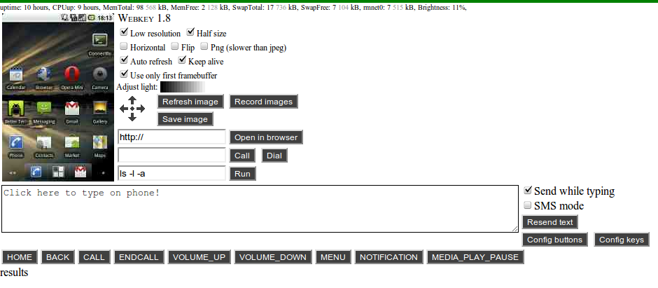

<
Help

`Screenshots' properties`
`Clicking, dragging`
`You should be able to click and drag on the phone by doing the same on the screenshot.`
`Low resolution`
`It makes resolution half both in horizontal and vertical direction.`
`PNG (slower than JPEG)`
`JPEG is a lossy compression. It is fast and has a very good compression ratio, but the image gets noisy. PNG is much slower, the image size is larger, but it uses lossless compression.`
`Use only first framebuffer`
`Usually Android uses double buffering: while the phone uses one of the two framebuffers to display, it prepares the new image on the other one. Then swaps them. That's an old trick to avoid flickering. On some older phones (for example on HTC G1 aka Dream) may display some parts from the first, and some parts from the second framebuffer, but in this case usually the second framebuffer doesn't contains a whole image. This option forces Webkey to use only the first framebuffer.`
`Record images`
`The phone starts to save images to a temporary folder /sdcard/webkey_TEMP/ as fast as it can. It uses the selected options (Low resolution, Horizontal, Flip, Png/Jpeg, Use only first framebuffer). After pressing Stop recording, the phone makes a zip archive from the images and sends it to the browser.`
`Typing`
`The large text area is for inject keys to the phone. You can do it immediately if "Send while typing" is checked, or you can send all the written text by pressing the button Send text. The injection of every non-English character may reload your phone's screen at the first time. The button DEL injects Back.`
`Config keys`
`You can configure the character substitution rules for SMS mode.`
`SMS mode`
`If you try to send special characters, like ő, ű in an SMS message, then these characters force Android to switch to unicode format, where the number of characters in a message drops from 160 to 70 in GSM networks. If SMS mode is checked, then lines with "works in SMS mode" have priority.`
SL4A, https://github.com/douglascrockford/JSON-js
`Translations`
German (Deutsch): Christian Wallert
Español (Spanish): Roberto Yoldi
Greek: Ilias Gerasimou
Chinese: liuyix
Hungarian: Péter Móra
LICENSE
Copyright (C) 2010-2011 Péter Móra, Zoltán Papp
This program is free software: you can redistribute it and/or modify
it under the terms of the GNU General Public License as published by
the Free Software Foundation, either version 3 of the License, or
(at your option) any later version.
This program is distributed in the hope that it will be useful,
but WITHOUT ANY WARRANTY; without even the implied warranty of
MERCHANTABILITY or FITNESS FOR A PARTICULAR PURPOSE. See the
GNU General Public License for more details.
You should have received a copy of the GNU General Public License
along with this program. If not, see http://www.gnu.org/licenses/.